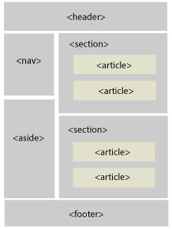

Sprint 2 - HTML & CSS DOM part2
10.7.2016
What is grid based design?
Grid based design is a structure for websites providing a clean starting layout. It offers a structure that allows for content to be stacked on top and next to each other. The grid system allows us to easily manipulate and position content.
Why do we want responsive websites?
Responsive web design and development is an approach, that suggests that a website should respond based on a user's device and behaviour. Content should be able to move fluidly and be resizable, based on screen resolution. The coding and design is based on a grid system, different image resolutions, and using percentages instead of pixels. Even google will boost the rating of the a website which is mobile friendly.
What is semantic structure?
Semantics - the meaning of a word, phrase, or text. In this case HTML is a markup that introduces meaning to the web. Semantic html is using html to reinforce structural meaning. It’s about using tags, class names, and ids that support the meaning of the content within the tags. Semantic html is also about using tags how they are supposed to be used.
